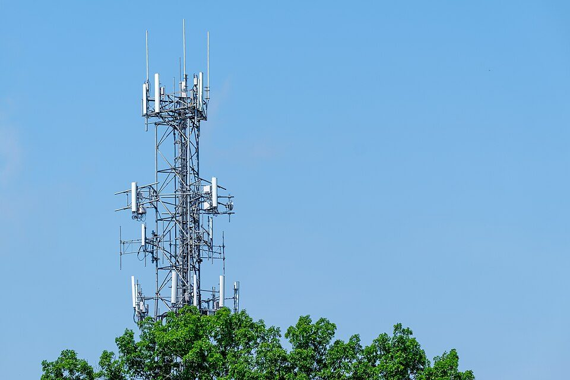

General information only. It does not replace advice from your care team and should not be used to choose a treatment.


"Sugar feeds cancer"
All cells, healthy ones too, use glucose. Eating sugar does not specifically make a tumour grow, and cutting it out completely does not cure it. What does matter is that excess calories lead to obesity, which increases the risk of several cancers.
"Mobile phones cause brain cancer"
IARC classified them in 2011 as "possibly carcinogenic" (Group 2B) on limited evidence. Later studies, including a review commissioned by the WHO in 2024, have found no increase in brain tumour risk, despite the huge rise in use.
"Deodorants and bras cause breast cancer"
There is no evidence that antiperspirants or underwired bras increase risk.
"Stress causes cancer"
Stress affects health, but large studies have not shown that it directly causes cancer. It can lead to habits that increase risk, such as smoking, drinking or eating worse.
"Sweeteners are carcinogenic"
IARC classified aspartame in 2023 as "possibly carcinogenic" on limited evidence, and the WHO expert committee kept the acceptable daily intake unchanged. At usual doses no risk has been shown.
"Microwaves or heated plastic cause cancer"
Microwaves do not make food radioactive. It is sensible to use microwave-safe containers, but there is no evidence that they cause cancer.
"Cancer is contagious"
It is not passed between people. Some infections that can lead to certain cancers are transmitted, such as HPV or hepatitis B and C, and are prevented by vaccines or treatment.
What is proven
Tobacco, alcohol, obesity, inactivity, processed meat, too much sun, some infections, radon and some workplace exposures. Focusing on these is what helps most.
See also: Tobacco, alcohol and other risks, How to read cancer news.
Sources
- Karipidis K, et al. The effect of exposure to radiofrequency fields on cancer risk in the general and working population: a systematic review of human observational studies. Environ Int. 2024;191:108983. doi:10.1016/j.envint.2024.108983
- Riboli E, et al. Carcinogenicity of aspartame, methyleugenol, and isoeugenol. Lancet Oncol. 2023;24:848-850. doi:10.1016/S1470-2045(23)00341-8
- NCI. Common cancer myths and misconceptions. cancer.gov